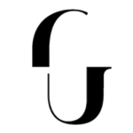
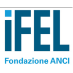
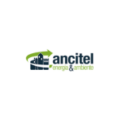
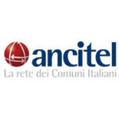
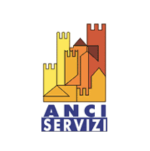
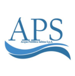
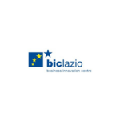

Partner istituzionali

Clienti istituzionali di riferimento
Collaboriamo con enti pubblici e organizzazioni che operano per lo sviluppo del territorio, offrendo soluzioni IT specializzate per la pubblica amministrazione e gli enti locali.

Gallerie degli Uffizi
Granatieri “Guardie”
ASS. NAZIONALE COMUNI ITALIANI

Fondazione IFEL

Ancitel EA spa

Ancitel spa

ANCI Servizi spa

Acqua Pubblica Sabina

BIC Lazio
Facoltà di Sociologia La Sapienza